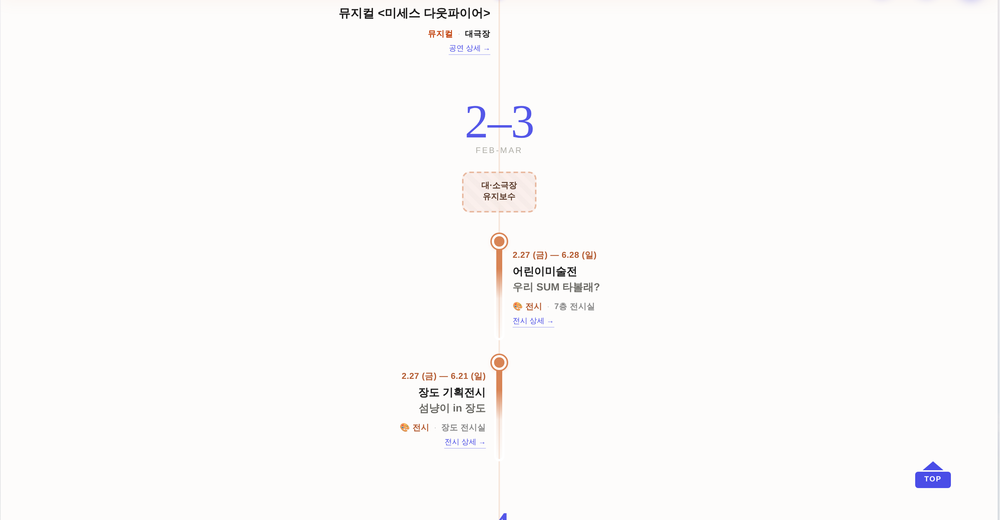
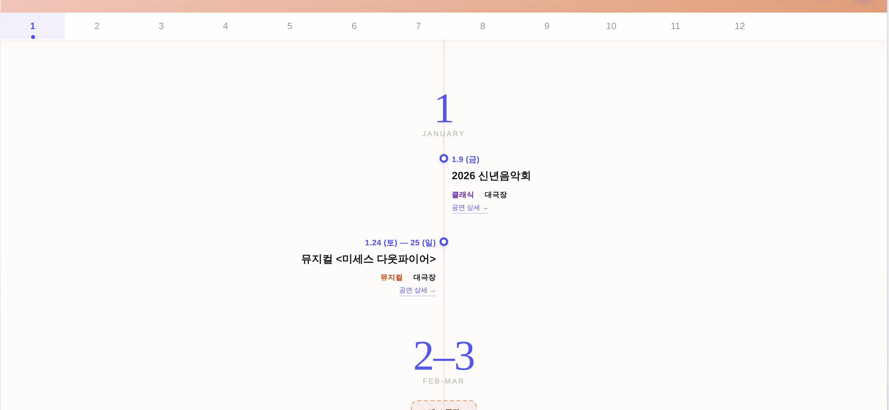
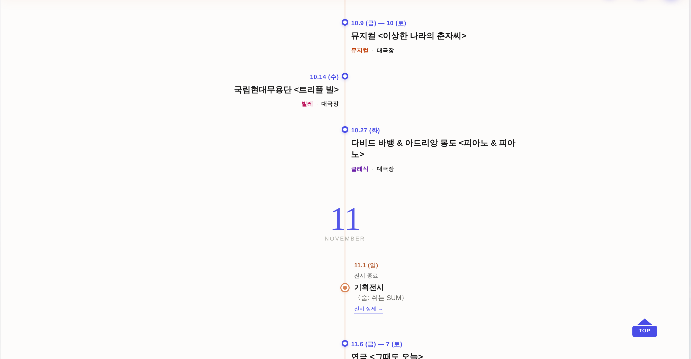
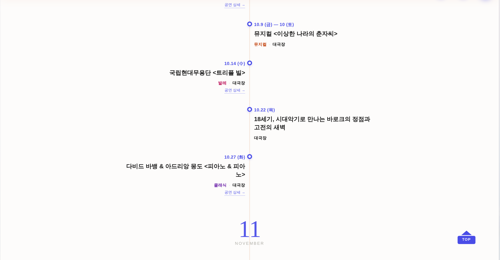

타임라인 25건이 전부 손으로 쓴 마크업이라, 시트에 새 공연·전시를 등록해도 연간 일정엔 영영 안 들어왔다(전시 3건째를 손으로 넣은 게 직전 작업). 이제 서식은 그대로 두고 내용만 프로그램 시트에서 만든다.
_ycSync
/
스냅샷 build_annual.mjs?annual·저장본)
_ycSync가 타임라인을 다시 그린다. 시트에 등록하면 그날로 반영.?annual 공유 링크·내려받은 HTML) — API를 못 부르므로 마크업의 <!-- YC-AUTO --> 스냅샷이 보인다.
스냅샷은 node tools/build_annual.mjs가 같은 _ycBuild로 다시 찍는다 → 렌더러 1벌 = 서식 드리프트 0._YC_MAINT = 2–3월·7–8월(현재 값 그대로).아래 두 컷은 같은 화면이다. 도형·색·간격·좌우 배치가 한 픽셀도 안 바뀌고, 장도 전시 시작일만 시트 정본으로 정정됐다(2.27 → 3.27).




| # | 항목 | BEFORE | AFTER |
|---|---|---|---|
| 1 | 뮤지컬 〈미세스 다웃파이어〉 요일 | 1.24 (금) — 25 (토) | 1.24 (토) — 25 (일) |
| 2 | 장도 기획전시 시작일 | 2.27 | 3.27 (시트·전시마스터 정본) |
| 3 | 브런치 콘서트 Ⅲ 상세 링크 | u=1281 (목록으로 튐) | u=1284 |
| 4 | 10.22 「18세기, 시대악기로 …」 | 없음 | 합류 |
| 5 | 상세 링크 미연결 | 6건 (1257·1278·1286·1289·1288·1280) | 전부 자동 연결 |
| 6 | 제목의 & 이스케이프 | 날 & | & |
| 7 | 장르 태그 없는 공연의 앞 구분점 | 「· 대극장」 | 「대극장」(:first-child::before 해제) |
⚠ 안 고쳐지는 것 = 시트 자체가 틀린 값. 〈달 샤베트〉는 시트가 10-03이라 화면도 10.1—3 그대로다(공식 일정은 10.4까지).
시트를 고치면 다음 로드에 자동 반영된다 — 화면을 손으로 고치는 길은 이제 없다.
| 축 | 측정 | 결과 |
|---|---|---|
| 기하 | 타임라인 점 32개 vs 중앙축 | 최대 편차 Δ0.000px |
| 기하 | 공연 텍스트블록 좌변(L열)·우변(R열) | 고유값 각 1개(699 / 699) = 오와열 유지 |
| 기하 | 제목 글자크기 | 공연 16px 단일 · 전시 14.5px 단일 |
| 동작 | _ycSync 실데이터 교체(스텁 시트) | 항목·월 섹션·유지보수·소극장 태그 재생성 ✓ · 관찰자 재바인딩 ✓ · 콘솔 에러 0 |
| 동작 | 내려받기 저장본 | 실데이터 렌더 그대로 반영 ✓ · 단독 렌더 에러 0 |
| 게이트 | check_design / 로그인 스모크 / 인라인 5블록 node --check | 전부 통과 (raw hex 1605/1605 동결) |